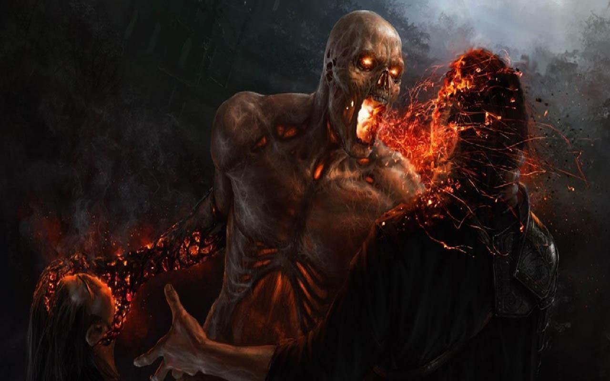

WELCOME
HORROR.
√Ћј¬Ќјя
Survival horror (/s??v??v(?)l ?h?r?/; с англ.?Ч?Ђужас выживани€ї, альтернативный перевод Ђвыживание в кошмареї Ч жанр компьютерных игр, дл€ которого характерными €вл€ютс€ упор на выживание игрового персонажа и нагнетание атмосферы страха и тревоги, подобно литературе и фильмам ужасов.
’от€ геймплей таких игр может включать в себ€ сражени€ с какими-либо противниками, как и в играх других жанров, игрок в survival horror не ощущает той степени контрол€ над происход€щим, котора€ типична дл€ большинства экшн-игр. Ёто достигаетс€ различными ограничени€ми Ч нехваткой боеприпасов, низким уровнем здоровь€ протагониста, скоростью передвижени€, видимости, а также различными преп€тстви€ми, усложн€ющими взаимодействие с игровой механикой
